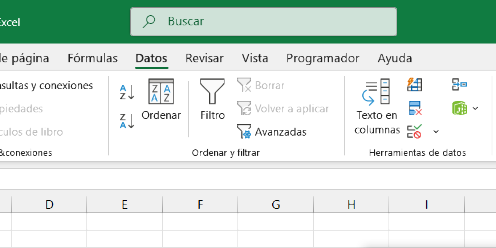

Pseudocódigo y Ordenación Simbólica
Programación I
Undécimo Grado - Sección A
Docente: Pablo Antonio Peña Mancia
Fecha: 2026
¿Qué es el Pseudocódigo?
Es una herramienta de programación que utiliza una mezcla de lenguaje natural con algunas convenciones sintácticas propias de los lenguajes de programación reales.
Su objetivo: que el programador se centre en la lógica y no en la sintaxis compleja de un lenguaje específico.
Ventajas
- Ocupa mucho menos espacio que un diagrama de flujo.
- Es extremadamente fácil de modificar y corregir.
- Se asemeja mucho al código final (C++, Java, Python).
- Es fácil de entender para cualquier ser humano.
Componentes Clave
Palabras Reservadas
Inicio, Fin, Leer, Escribir, Si, Entonces, Mientras.
Indentación
Espacios a la izquierda para mostrar la jerarquía de bloques.
Ordenación Simbólica
Consiste en organizar los elementos o instrucciones basándose en símbolos y prioridades lógicas para asegurar la ejecución correcta del algoritmo.
Prioridad de Operadores
El orden en que se resuelven los cálculos es vital para el resultado:
Asignación
Es la acción de guardar un valor en una variable.
Se usa el símbolo <- o el signo =.
Ejemplo: total <- precio + impuesto
Lectura y Escritura
Leer
Obtiene datos desde el teclado e ingresa al sistema.
Escribir
Muestra resultados en pantalla o impresora.
Comentarios
Son notas que explican partes del programa. No se ejecutan. Se identifican con //.
// Este es un comentario
Leer n // Captura el número
Estructura General
ALGORITMO Descuento
LEER subtotal
total <- subtotal * 0.90 // 10% desc
ESCRIBIR "Total final: ", total
FINALGORITMO
Claridad ante todo
"Un pseudocódigo debe ser tan claro que cualquier persona con lógica básica pueda seguirlo sin ayuda externa."
Ordenación

Lógica de Prioridad
// ¿Cuánto vale operacion?
LET operacion = 2 + 3 * 4
IF operacion == 14 THEN
PRINT "Correcto: Mult primero"
ELSE
PRINT "Error: No sumes antes"
ENDIF
Asignación
MI PRIMER PSEUDO
Realizar en el cuaderno el pseudocódigo para un algoritmo que calcule el salario semanal de un obrero (Horas trabajadas * Pago por hora).